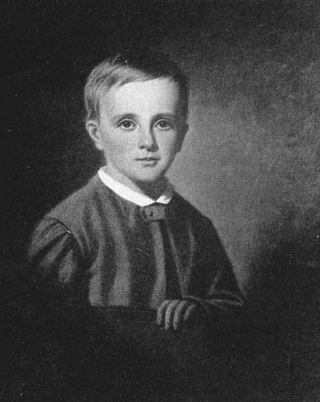
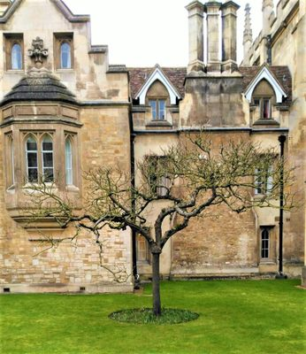
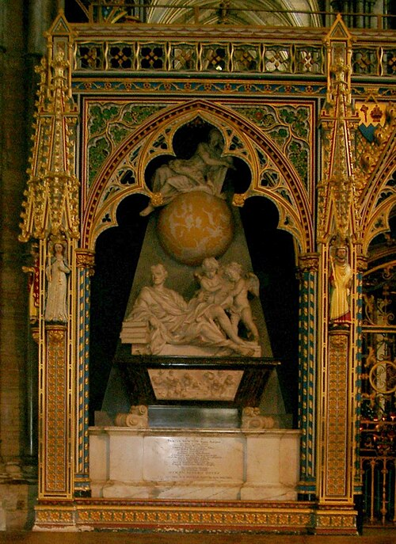

1. Originile și Copilăria (1643–1661)

Sir Isaac Newton copil.
Isaac Newton s-a născut prematur în primele ore ale zilei de 4 ianuarie 1643 (stil nou), la conacul Woolsthorpe din Lincolnshire. Fiind atât de mic la naștere încât „ar fi putut încăpea într-o cană”, șansele sale de supraviețuire păreau minime. Tatăl său, un mic fermier analfabet dar înstărit, murise cu trei luni înainte. Când Isaac avea trei ani, mama sa, Hannah Ayscough, s-a recăsătorit cu un reverend bogat, lăsându-l pe Isaac în grija bunicii materne. Această separare timpurie i-a marcat profund personalitatea, dezvoltând un sentiment de nesiguranță și un caracter solitar, introvertit și adesea suspicios.
Primele studii le-a făcut la școlile din sat, dar la 12 ani a fost trimis la The King's School în Grantham. Deși inițial nu era un elev strălucit, o dispută cu un coleg bătăuș l-a ambiționat să devină primul din clasă. În perioada petrecută la Grantham, a locuit la un farmacist numit Clark, unde a început să fie fascinat de chimie și a început să construiască modele mecanice complexe: mori de vânt acționate de șoareci, ceasuri de apă și cadrane solare precise.
La vârsta de 17 ani, mama sa, rămasă din nou văduvă, l-a retras de la școală pentru a-l pregăti să administreze ferma familiei. Isaac s-a dovedit a fi un fermier dezastruos; în loc să supravegheze animalele, prefera să citească sub un copac sau să sculpteze în lemn. Convinsă de unchiul său și de directorul școlii din Grantham că potențialul său intelectual este imens, Hannah l-a lăsat în cele din urmă să se întoarcă la studii pentru a se pregăti de universitate.
2. Anii de la Cambridge și "Annus Mirabilis" (1661–1667)

Trinity College, locul formării sale.
În 1661, a fost admis la Trinity College, Cambridge ca „subsizar” – un statut rezervat studenților săraci care trebuiau să presteze servicii pentru colegii mai bogați în schimbul școlarizării. Deși programa oficială era încă ancorată în filosofia învechită a lui Aristotel, Newton a ignorat cursurile standard și a început să exploreze pe cont propriu marile minți ale secolului: Descartes, Gassendi, Galilei și Kepler. În faimosul său caiet de note intitulat „Quaestiones Quaedam Philosophicae”, el a scris deviza care i-a ghidat viața: "Amicus Plato, amicus Aristoteles, sed magis amica veritas" (Platon mi-e prieten, Aristotel mi-e prieten, dar mai prietenă mi-e adevărul).
În 1665, marea epidemie de ciumă a lovit Londra, forțând închiderea Universității Cambridge. Newton s-a retras înapoi la casa natală din Woolsthorpe pentru o perioadă de 18 luni. Această izolare forțată a devenit cunoscută drept Annus Mirabilis (Anul Miraculos), fiind probabil cea mai concentrată perioadă de geniu din istoria omenirii. Fără profesori și fără laboratoare, tânărul de 23 de ani a pus bazele celor mai importante ramuri ale științei moderne.
La Woolsthorpe, a inventat calculul diferențial și integral (pe care îl numea „metoda fluxiunilor”), a formulat teorema binomului și a început să experimenteze cu prisme de sticlă, descoperind că lumina albă este de fapt un amestec de culori. Tot aici a avut loc faimosul episod cu mărul, care l-a condus la intuiția revoluționară că forța care atrage mărul spre pământ este aceeași cu cea care menține Luna pe orbita sa. Când s-a întors la Cambridge în 1667, Newton deținea deja secretele care aveau să schimbe lumea, deși nu publicase încă nimic.
3. Maturitatea Științifică: Principia (1667–1696)

Prima ediție a lucrării Principia.
Reîntors la Cambridge, a fost numit Profesor Lucasian de Matematică în 1669, la doar 26 de ani. În această perioadă, Newton a lucrat în secret la teoriile sale despre mișcare și forțele centripete, însă ezita să publice din cauza fricii de critici.
Momentul de cotitură a fost vizita astronomului Edmond Halley în 1684, care l-a întrebat pe Newton ce formă ar avea orbita unei planete sub acțiunea unei forțe invers proporționale cu pătratul distanței. Newton a răspuns imediat: "O elipsă", menționând că deja calculase acest lucru cu ani în urmă.
În 1687, finanțată integral de Halley, a fost publicată "Philosophiae Naturalis Principia Mathematica". Lucrarea a definit cele trei legi ale mișcării: Inerția, F=ma și Acțiunea și Reacțiunea, demonstrând matematic cum gravitația guvernează atât căderea unui măr, cât și mișcarea planetelor.
4. Cariera Publică și Recunoașterea (1696–1727)

Mormântul lui Newton din Westminster.
În 1696, s-a mutat la Londra, devenind Supraveghetor al Monetăriei Regale, unde a condus marea recoacere a monedelor britanice și a luptat împotriva falsificatorilor. Această funcție nu a fost doar onorifică; Newton a aplicat rigoarea științifică pentru a stabiliza economia regatului.
În 1703 a fost ales președinte al Royal Society, poziție pe care a deținut-o până la sfârșitul vieții. Sub conducerea sa, societatea a devenit cea mai prestigioasă instituție științifică din lume. În 1705, a fost înnobilat de Regina Anne, fiind primul om de știință care a primit titlul de "Sir" pentru realizările sale.
S-a stins din viață la vârsta de 84 de ani, fiind înmormântat cu onoruri de stat la Westminster Abbey. Monumentul său funerar poartă inscripția: "Să se bucure muritorii că a existat o asemenea podoabă a speciei umane."
Repere Cronologice
| Anul | Locație | Realizare / Eveniment |
|---|---|---|
| 1643 | Woolsthorpe | Nașterea savantului la 4 ianuarie. |
| 1661 | Cambridge | Admiterea la Trinity College. |
| 1665-1666 | Woolsthorpe | "Anii Mirabili": Gravitația și Calculul fluxiunilor. |
| 1669 | Cambridge | Numirea ca Profesor Lucasian. |
| 1687 | Londra | Publicarea primei ediții a lucrării "Principia". |
| 1703 | Londra | Ales Președinte al Royal Society. |
| 1705 | Cambridge | Primește titlul de "Sir" din partea Reginei Anne. |
| 1727 | Londra | Moartea și înhumarea la Westminster Abbey. |